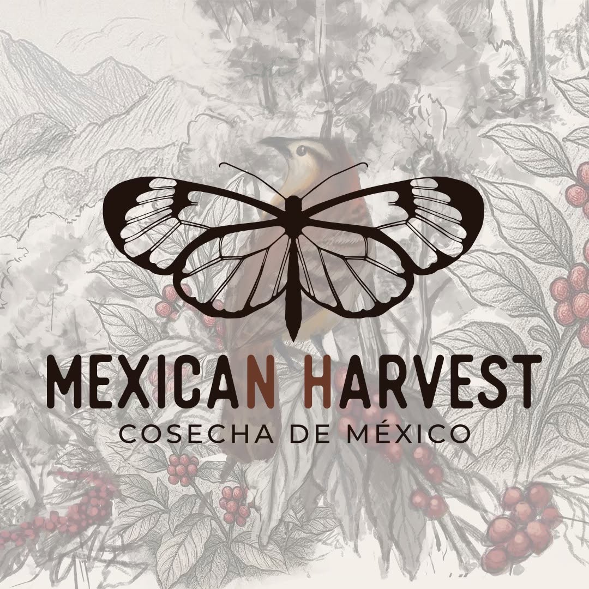
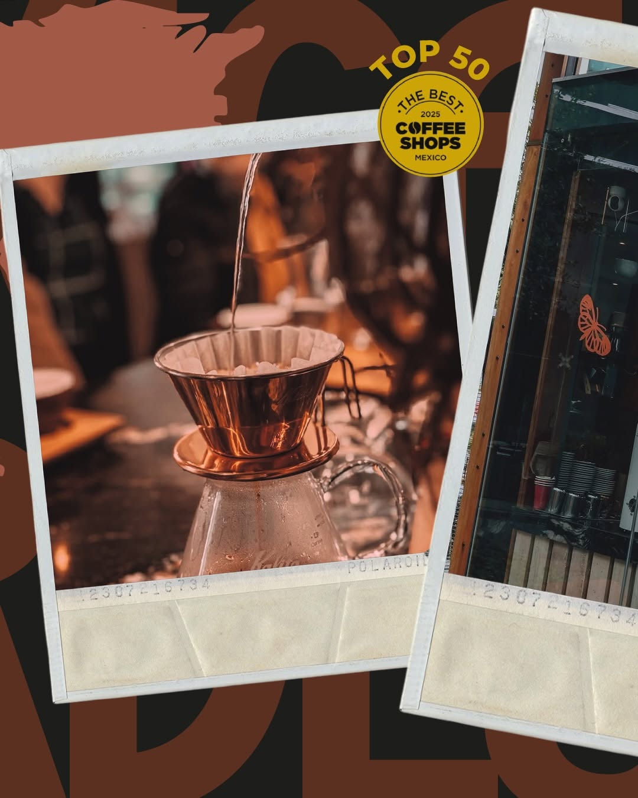
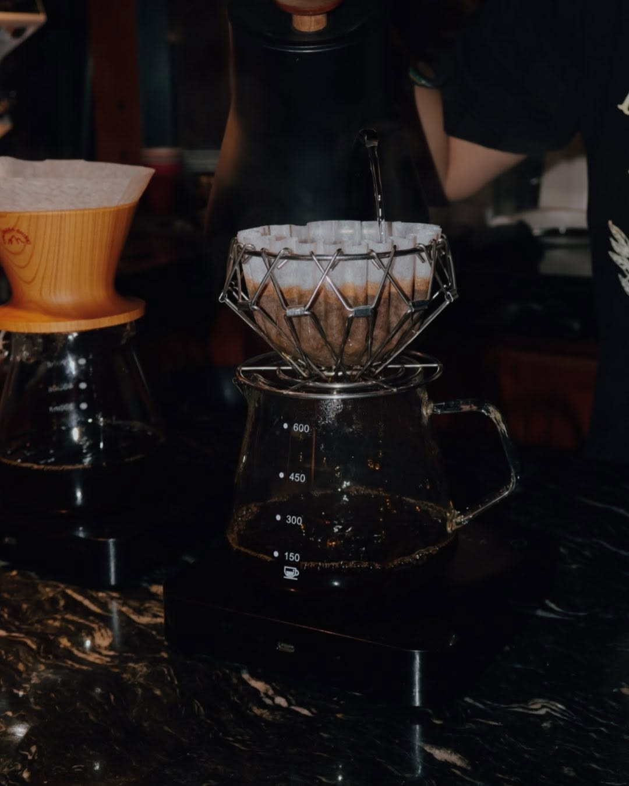
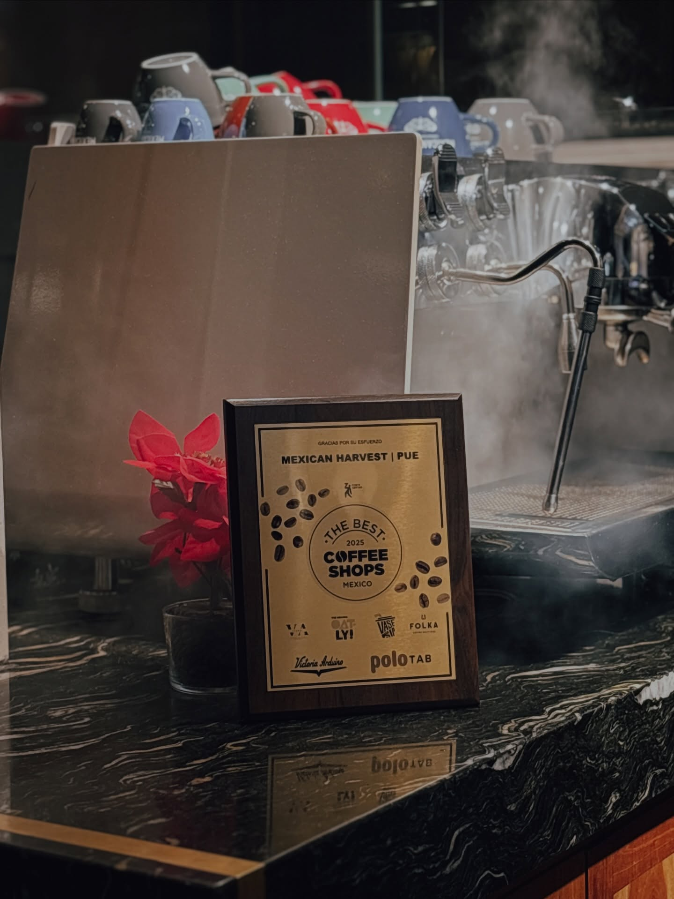
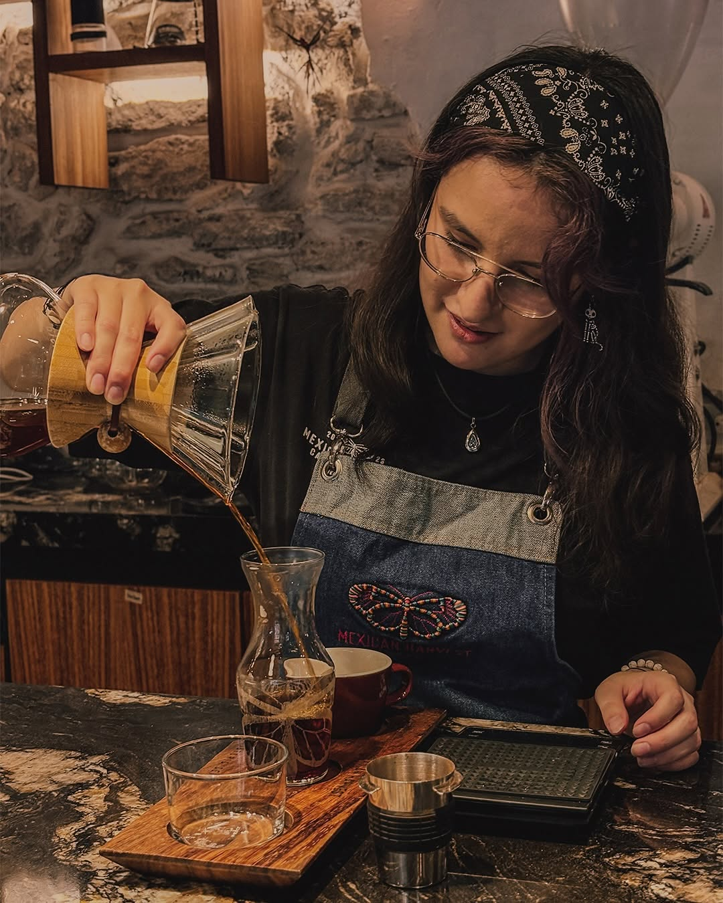
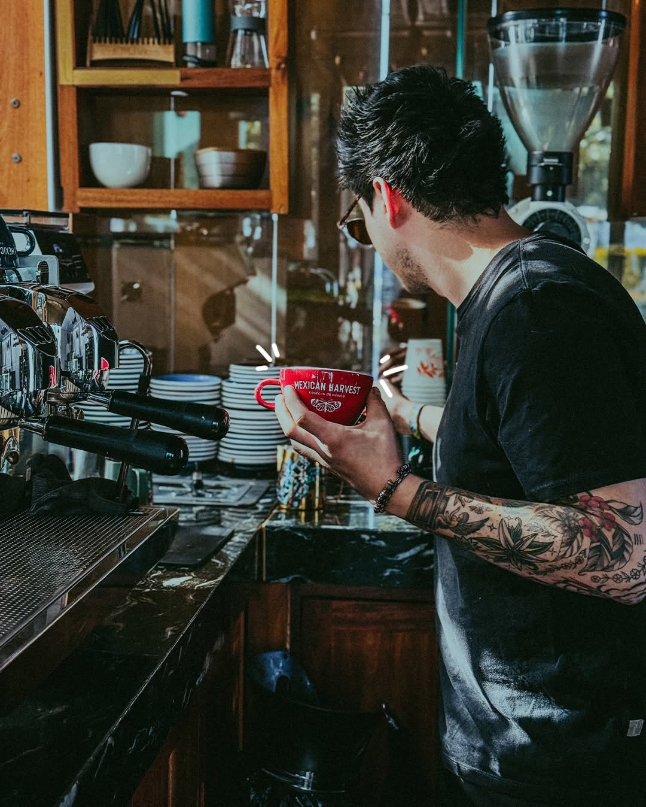
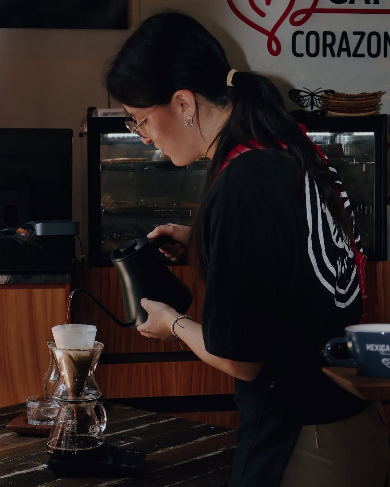

Origen justo
Compramos directo al productor, pagando por calidad y relación de largo plazo.
Lunes a domingo · 8:00 am — 10:30 pm · Top 50 The Best Coffee Shops México 2025
Inicio · Nosotros
Una cafetería poblana que cree que el mejor grano mexicano merece quedarse en México — y servirse con orgullo.


Nuestra historia
Como la monarca que cruza México cada cosecha, nuestro café viaja desde las sierras cafetaleras hasta las barras de Puebla. Empezamos con una barra pequeña en el Centro Histórico y un puñado de productores aliados; hoy somos cuatro barras, una panadería hermana y una comunidad que crece taza a taza.
En 2025, gracias a nuestros productores, equipo y clientes, entramos al Top 50 de The Best Coffee Shops México. Ese premio no es nuestro: es de toda la cadena que hace posible cada taza.
Filosofía
Compramos directo al productor, pagando por calidad y relación de largo plazo.
Perfilamos cada lote por separado; el tueste correcto respeta lo que la finca logró.
La barra es una mesa compartida: te explicamos, te escuchamos y te servimos con calma.
Grano, panadería y colaboraciones locales. Lo mejor de la cosecha se queda en casa.
Del cafetal a tu taza
Nuestra bitácora de café registra cada paso del proceso. Este es el camino que sigue una cosecha antes de llegar a tu mesa.

Productores de Puebla, Oaxaca, Chiapas y Veracruz cortan solo cereza madura, a mano y en varias pasadas por temporada.
Lavados, naturales y honeys — como nuestro Black Honey láctico de Atitlán, Oaxaca, con notas de chocolate, mantequilla y toronja.
Evaluamos cada microlote en mesa de cata; solo entra a la tolva lo que supera los 84 puntos.
Tostamos en lotes pequeños, ajustando curva y desarrollo para cada origen y cada método de preparación.
Nuestros baristas calibran cada mañana: espresso, métodos y coldbrew listos para que el viaje termine en tu taza.

Calidad del grano
Café de especialidad significa trazabilidad: sabemos de qué parcela viene cada saco, quién lo procesó y cómo se movió hasta el tostador. Cada bolsa que vendemos lleva su origen, proceso, altura y notas de cata.
El equipo
Baristas, tostadores y panaderos que comparten una misma obsesión: que cada visita sepa mejor que la anterior.

Filtrados y cataciones

Calibración diaria

Escuela interna de baristas